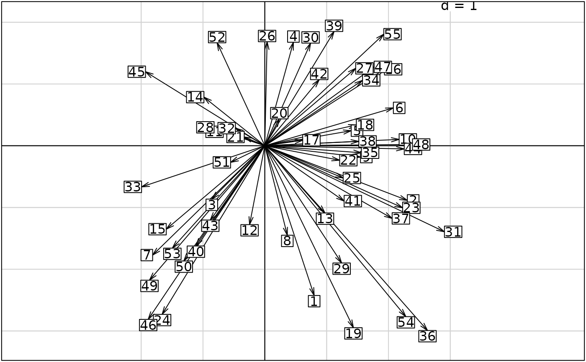

Plot of the factorial maps for the projection of a vector basis
s.arrow.Rdperforms the scatter diagrams of the projection of a vector basis.
Usage
s.arrow(dfxy, xax = 1, yax = 2, label = row.names(dfxy),
clabel = 1, pch = 20, cpoint = 0, boxes = TRUE, edge = TRUE, origin = c(0,0),
xlim = NULL, ylim = NULL, grid = TRUE, addaxes = TRUE, cgrid = 1,
sub = "", csub = 1.25, possub = "bottomleft", pixmap = NULL,
contour = NULL, area = NULL, add.plot = FALSE)Arguments
- dfxy
a data frame containing the two columns for the axes
- xax
the column number of x in
dfxy- yax
the column number of y in
dfxy- label
a vector of strings of characters for the point labels
- clabel
if not NULL, a character size for the labels used with par("cex")*
clabel- pch
if
cpoint> 0, an integer specifying the symbol or the single character to be used in plotting points- cpoint
a character size for plotting the points, used with par("cex")*
cpoint. If zero, no points are drawn.- boxes
if TRUE, labels are framed
- edge
a logical value indicating whether the arrows should be plotted
- origin
the fixed point in the graph space, by default c(0,0) the origin of axes. The arrows begin at
cent.- xlim
the ranges to be encompassed by the x-axis, if NULL they are computed
- ylim
the ranges to be encompassed by the y-axis, if NULL they are computed
- grid
a logical value indicating whether a grid in the background of the plot should be drawn
- addaxes
a logical value indicating whether the axes should be plotted
- cgrid
a character size, parameter used with
par("cex")*cgrid, to indicate the mesh of the grid- sub
a string of characters to be inserted as legend
- csub
a character size for the legend, used with
par("cex")*csub- possub
a string of characters indicating the legend position ("topleft", "topright", "bottomleft", "bottomright")
- pixmap
an object 'pixmap' displayed in the map background
- contour
a data frame with 4 columns to plot the contour of the map : each row gives a segment (x1,y1,x2,y2)
- area
a data frame of class 'area' to plot a set of surface units in contour
- add.plot
if TRUE uses the current graphics window
Examples
s.arrow(cbind.data.frame(runif(55,-2,3), runif(55,-3,2)))
